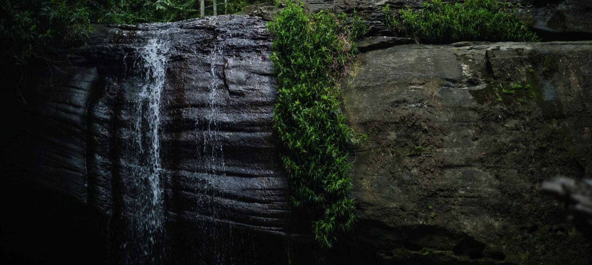
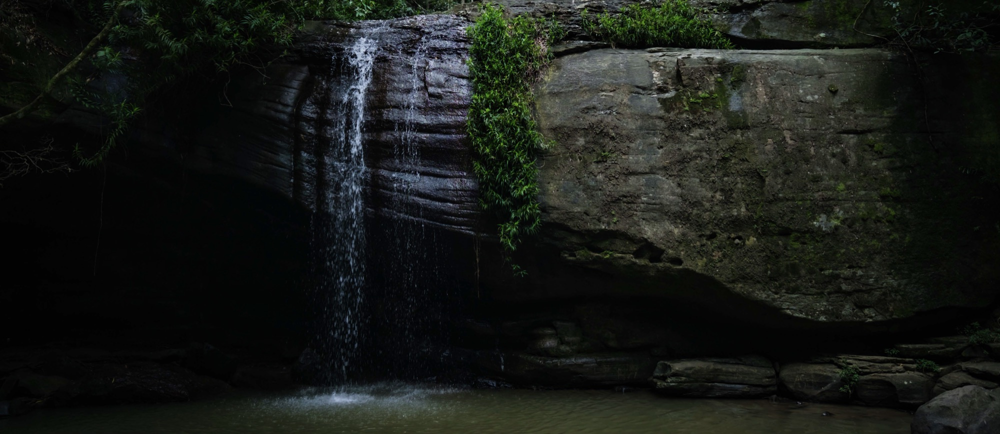

Sacred Playground — where the sacred meets the playful.
Sacred Playground is Alexander Alma’s creative ecosystem and evolving body of work: a home for music, community, gatherings and ideas still taking shape.

A world where the sacred meets the playful.
Life itself can be treated as ceremony.
At the heart of this vision is Sacred Playground, Alexander’s creative ecosystem and evolving body of work, which serves to remind us that life itself can be treated as ceremony. It honours both the sacred and the playful, inviting a more loving, curious and embodied relationship with ourselves, one another and the great mystery of life.
Sacred Playground Records
An evolving record label and creative imprint within the wider Sacred Playground ecosystem.
It may release Alexander’s own music as well as music by other artists, commissioned work and collaborations. Alexander’s artist identity remains distinct; a release can be credited to Alexander Alma and released through Sacred Playground Records.
Explore Alexander’s music
Sacred Brotherhood
A space for men’s work within Sacred Playground. Future gathering details will be shared here.
Events & Gatherings
Spaces to meet through music, ritual, conversation and shared experience.
Rhythm & Ritual
A Sacred Playground gathering concept. Description, dates and booking details will be added when confirmed.
Future gatherings
New events and community offerings will be announced here.

Sacred Playground Podcast
A future home for conversations and explorations from within the Sacred Playground world.
Episode information and listening links will be added when the podcast is ready.
COMING INTO BEING
There’s room for what’s next.
Collaborations, commissioned work, gatherings and future offerings can grow here over time.